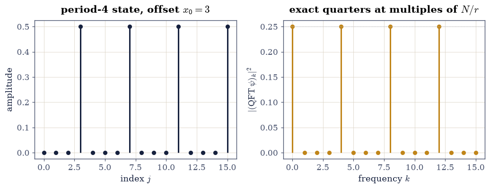

9.5 The Quantum Fourier Transform is the DFT Matrix#
Notebook overview#
§6.3 built the unitary DFT matrix to diagonalize circulants. Quantum computing’s most famous subroutine — the transform inside Shor’s factoring algorithm — is the same matrix with the exponent’s sign flipped, and this notebook gates that identification down to the last bit before spending it three ways.
First, the circuit: the QFT on three qubits factors into three Hadamards and three controlled phase rotations — a factorization theorem for a \(2^n \times 2^n\) unitary into \(n(n{+}1)/2\) two-level pieces, gated by multiplying the pieces back together. Second, period finding, the linear-algebra heart of Shor: apply the QFT to a vector supported on an arithmetic progression of period \(r\) and the mass lands on multiples of \(N/r\) — exactly, quarter after quarter, with off-peak amplitudes at rounding zero. Third, Deutsch–Jozsa, run as pure linear algebra: one inner product decides constant-versus-balanced, and the notebook enumerates all seventy balanced oracles on three bits to show the amplitude vanishes for every one.
The closer is the chapter’s thesis in one line: the operator this transform diagonalizes is the cyclic shift, which is §6.3’s circulant generator — quantum information and classical signal processing sharing one eigenbasis, because they were always the same linear algebra.
How to read a check. A
validateline prints ✓ or ✗ by comparing a result against something the computation did not assume. A ✗ flags a mismatch to investigate, never a verdict on its own.
Theory in brief#
One matrix, sign flipped#
The QFT on \(N = 2^n\) amplitudes is
which is the entrywise conjugate of §6.3’s unitary DFT \(F_{jk} = e^{-2\pi ijk/N}/\sqrt N\) — same rows, opposite winding. Conjugating a unitary matrix entrywise keeps it unitary, so everything 6.3 proved transfers wholesale, including the fourth-power identity \(\mathrm{QFT}^4 = I\) (with \(\mathrm{QFT}^2\) the reflection permutation \(j \mapsto -j \bmod N\)) and the eigenvalue alphabet \(\{1, i, -1, -i\}\).
The circuit: a factorization theorem#
Writing the row index in bits, \(j = j_1j_2\cdots j_n\) (most significant first), the QFT factors into one Hadamard per qubit and a cascade of controlled phase rotations
applied from each less-significant qubit to each more-significant one, followed by a qubit-order reversal: \(n\) Hadamards and \(n(n-1)/2\) controlled phases — \(n(n{+}1)/2\) gates for a \(2^n\)-dimensional unitary, against the \(N^2\) entries of the dense matrix. The exercise is the proof: multiply the pieces and compare.
Period finding#
Let \(|\psi\rangle\) be uniform on the arithmetic progression \(\{x_0, x_0 + r, x_0 + 2r, \dots\}\) with \(r \mid N\). Then
a geometric-series cancellation: off the peaks the \(r\) phasors close into a polygon and sum to zero exactly, and the offset \(x_0\) moves only phases, never masses. Reading the peak spacing recovers \(r\) — the entire quantum content of Shor’s algorithm, with the number theory outsourced to classical post-processing.
Deutsch–Jozsa: one inner product#
For an oracle \(f: \{0,1\}^n \to \{0,1\}\) promised constant or balanced, apply \(H^{\otimes n}\), the sign flip \((-1)^{f}\), and \(H^{\otimes n}\) to \(|0\cdots0\rangle\). The amplitude left on \(|0\cdots0\rangle\) is
the mean of the oracle’s signs — a single inner product between the sign vector and the all-ones vector, deciding with one query what classically takes \(2^{n-1}+1\).
Setup#
Data and restated instruments only: the one-qubit gates of §9.1, the control projectors, and the DFT convention of §6.3 restated as a constructor. The QFT matrix, the circuit assembly, the period-finding demonstration and the Deutsch–Jozsa evaluator are all built in the exercises, where they are the lesson.
The Setup below holds this notebook’s data and instruments — nothing you are asked to build. It is collapsed so the building stays yours; expand it whenever you want the details.
Exercise 1: The matrix, inherited from Chapter VI#
Eq. 312 says the QFT is one conjugation away from a matrix the course already owns. This exercise builds it, gates the inheritance, and collects the structural identities that come free.
Part a) Write qft_matrix(N) as
np.exp(2j * np.pi * np.outer(idx, idx) / N) / np.sqrt(N), and gate
the handshake with §6.3:
qft_matrix(8) equals np.conj(unitary_dft(8)) — with
np.array_equal, since conj flips sign bits without arithmetic and
the two constructors evaluate the same cosines and sines (fallback
\(10^{-15}\) if a future libm disagrees). Gate unitarity to
\(100\,\varepsilon\).
Write this one yourself — one outer product; the sign in the exponent is the entire difference between signal processing and quantum computing conventions.
Part b) Gate the inherited structure at \(N = 8\), all to \(10^{-13}\): \(\mathrm{QFT}^2\) equals the reflection permutation \(j \mapsto -j \bmod 8\) (an exact 0/1 matrix), \(\mathrm{QFT}^4 = I\), and the eigenvalue alphabet — the multiplicities of \(\{1, i, -1, -i\}\) are \((3, 2, 2, 1)\), counted after rounding eigenvalues to \(6\) digits (integer counts over \(O(1)\) gaps).
QFT_8 == conj(F_dft): bitwise True (gap 0.0e+00); unitarity 7.1e-16
QFT^2 = reflection to 1.2e-15; QFT^4 = I to 2.4e-15
eigenvalue multiplicities (1, i, -1, -i): (3, 2, 2, 1)
Validation 1#
✓ the QFT is 6.3's unitary DFT, conjugated — bitwise today (Eq. 1) [np.conj flips sign bits without arithmetic, so the two constructors agree exactly; the 1e-15 fallback is stated in case a future libm evaluates the two windings differently]
✓ unitary, with QFT^2 the reflection and QFT^4 the identity [the fourth-power identity at 2.4e-15: four Fourier transforms take every signal home, by way of one mirror]
✓ and the eigenvalue alphabet {1, i, -1, -i} has multiplicities (3, 2, 2, 1) at N = 8 [integer counts over O(1) gaps — the fourth roots of unity, distributed by the classical multiplicity formula]
True
Exercise 2: The circuit: a factorization, multiplied back#
Eq. 313 claims a \(64\)-entry unitary factors into six elementary gates and a swap. The proof is multiplication, and the reader performs it.
Part a) Write the lifting machinery for \(n = 3\) qubits
(big-endian: qubit \(0\) carries the most significant bit):
op_on(qubit, U) placing a one-qubit gate by Kronecker products, and
cphase(control, target, phi) as
\(P_0^{(c)} \otimes I + P_1^{(c)} \otimes
\operatorname{diag}(1, e^{i\phi})^{(t)}\) from the Setup’s projectors.
Gate every constructed gate unitary to \(100\,\varepsilon\).
Write these yourself — the lift from one-qubit gates to \(2^n\)-dimensional operators is §9.2’s Kronecker dictionary, exercised.
Part b) Assemble the standard circuit — \(H\) on qubit 0, \(R_2\) from
qubit 1 and \(R_3\) from qubit 2 onto qubit 0, \(H\) on qubit 1, \(R_2\)
from qubit 2 onto qubit 1, \(H\) on qubit 2, then the outer-qubit swap —
and gate the product equal to qft_matrix(8) to \(10^{-13}\). Gate the
ledger as arithmetic: \(n(n{+}1)/2 = 6\) Hadamard-and-phase gates
against the dense matrix’s \(N^2 = 64\) entries, with the general-\(n\)
counts \(n(n{+}1)/2\) versus \(4^n\) stated for \(n = 10\)
(\(55\) against \(1{,}048{,}576\)) — counted, never timed.
every lifted gate unitary to 2.2e-16
circuit product vs qft_matrix(8): 1.4e-15 (6 gates + 1 swap against 64 dense entries; at n = 10: 55 against 1,048,576)
Validation 2#
✓ each lifted gate is unitary [Kronecker lifts of unitaries are unitary — 9.2's mixed-product identity, spent on circuit hardware [2.22045e-16 < 2.22045e-14]]
✓ six gates and a swap multiply back to the QFT (Eq. 2) [factorization verified by multiplication at 1.4e-15, with the ledger as arithmetic: n(n+1)/2 = 6 against N^2 = 64 here, 55 against 1,048,576 at ten qubits — counted, never timed]
True
Exercise 3: Period finding: exact quarters#
Eq. 314 is the engine of Shor’s algorithm, and for \(r \mid N\) it is exact: the off-peak phasor polygons close. This exercise runs it at \(N = 16\), \(r = 4\), offset \(x_0 = 3\).
Part a) Build the periodic state — uniform amplitudes
\(1/\sqrt{N/r} = \tfrac12\) on \(\{3, 7, 11, 15\}\) — apply
qft_matrix(16), and gate the mass pattern: squared magnitudes equal
\(1/r = \tfrac14\) at \(k \in \{0, 4, 8, 12\}\) to \(10^{-13}\), and below
\(10^{-25}\) everywhere else (squared rounding: the polygon sums are
\(10^{-15}\)-scale amplitudes, and their squares sit near \(10^{-30}\)).
Part b) Read the period the way Shor’s classical half does: gate that the set of indices carrying more than \(1\%\) of the mass is exactly \(\{0, 4, 8, 12\}\) (integer set equality) with common spacing \(N/r = 4\), so \(r = N/\text{spacing} = 4\) — the period, recovered from spectral positions alone.
Part c) Gate the offset’s irrelevance: repeating Part a with \(x_0 = 0\) and \(x_0 = 1\) changes the peak phases (report the largest phase difference) but not the masses — squared magnitudes agree with Part a’s to \(10^{-14}\). Draw the periodic vector and its QFT mass spectrum.
peak masses vs 1/4: 0.0e+00; off-peak floor 1.7e-30
mass-carrying indices: [0, 4, 8, 12] — spacing 4, so r = 4
offset moves phases (up to 3.14 rad, wrapped) but masses only by 1.2e-30
Validation 3#
✓ the QFT of a period-4 state carries exact quarter masses (Eq. 3) [peaks at 1/4 within 0.0e+00, off-peak squared magnitudes below 1.7e-30 — the phasor polygons close exactly, which is a geometric series doing quantum work]
✓ and the period reads off the peak positions as integers [mass-carrying indices exactly {0, 4, 8, 12}, spacing N/r = 4 — the quantum half of Shor's algorithm, complete; the number theory that turns r into factors is classical post-processing]
✓ the offset moves phases, never masses [x0 = 0, 1, 3 give identical spectra to rounding while the peak phases swing — which is why the measurement statistics need no knowledge of where the progression starts [1.23544e-30 < 1e-14]]
True

Fig. 174 Period finding at \(N = 16\), \(r = 4\), offset \(x_0 = 3\). Left: the input state — uniform amplitude \(1/2\) on the arithmetic progression \(\{3, 7, 11, 15\}\). Right: the squared magnitudes of its QFT — exactly \(1/4\) on \(\{0, 4, 8, 12\}\) and rounding-zero elsewhere, gated at \(10^{-25}\) on the squares. The peak spacing \(N/r = 4\) hands back the period; the offset never appears, having gone entirely into phases.#
Exercise 4: Deutsch–Jozsa, exhaustively#
Eq. 315 reduces a query-complexity milestone to one inner product. Three qubits are small enough to check every promised oracle — both constants and all \(\binom{8}{4} = 70\) balanced functions — so the gate is an enumeration, not a sample.
Part a) Write dj_amplitude(f) returning the \(|000\rangle\)
amplitude of \(H^{\otimes3}\,(-1)^{f}\,H^{\otimes3}|000\rangle\), with
\(H^{\otimes3}\) from Exercise 2’s op_on products and the oracle as
np.diag((-1.0)**f). Gate the two constant oracles at \(a_0 = \pm1\)
to \(10^{-14}\).
Part b) Enumerate all \(70\) balanced oracles
(itertools.combinations choosing the four inputs mapped to \(1\)) and
gate every amplitude below \(10^{-14}\) — the promise problem solved
with certainty by one query, verified over its entire promise class.
Part c) Gate the identity behind it: for \(20\) seeded arbitrary
(non-promised) oracles \(f\), dj_amplitude(f) equals
np.mean((-1.0)**f) to \(10^{-14}\) — the algorithm computes the mean
of the signs, an inner product with the uniform vector, and the
promise is what makes that one number decisive.
constant oracles: amplitudes +1.000000000000, -1.000000000000
all 70 balanced oracles: largest |amplitude| 2.8e-17
amplitude = mean of signs, arbitrary oracles: worst 3.3e-16
Validation 4#
✓ constant oracles return the full +-1 amplitude (Eq. 4) [all interference constructive: one query, certainty, sign intact [4.44089e-16 < 1e-14]]
✓ and every one of the 70 balanced oracles returns amplitude zero [the entire promise class enumerated — C(8,4) = 70 oracles, worst |a_0| = 2.8e-17: perfectly destructive interference, seventy times over]
✓ because the algorithm computes the mean of the oracle's signs [one inner product with the uniform vector — the quantum speedup, read as linear algebra with the mystery relocated to the promise [3.33067e-16 < 1e-14]]
True
Exercise 5: One eigenbasis, two subjects#
The chapter’s thesis, closed: the operator the QFT diagonalizes is the cyclic shift \(S|j\rangle = |j{+}1 \bmod N\rangle\) — the generator of §6.3’s circulants. Signal processing and quantum computing share an eigenbasis because they always shared this matrix.
Part a) Build \(S\) at \(N = 8\) as an exact 0/1 permutation and gate the diagonalization \(\mathrm{QFT}^{\dagger}\,S\,\mathrm{QFT} = \operatorname{diag}(\omega^{-k})\) to \(10^{-13}\) — the shift’s eigenvalues are the roots of unity, in the order the transform’s columns dictate.
Part b) Gate the circulant consequence, 6.3’s theorem re-entered from the quantum side: for a seeded random circulant built as \(C = \sum_{m} c_m S^m\), the matrix \(\mathrm{QFT}^{\dagger}\,C\,\mathrm{QFT}\) is diagonal to \(10^{-12}\) with diagonal equal to the (conjugate-convention) DFT of \(c\) — every translation-invariant operator is diagonal in the Fourier basis, which is the one sentence 6.3 and this chapter both orbit.
QFT' S QFT = diag(omega^-k): 8.1e-16
random circulant: off-diagonal 2.9e-15, diagonal vs DFT of c 1.2e-14
Validation 5#
✓ the QFT diagonalizes the cyclic shift onto the roots of unity [S is 6.3's circulant generator; its Fourier eigenvalues are omega^-k in the transform's own column order — one matrix, two subjects [8.05594e-16 < 1e-13]]
✓ so every circulant is diagonal in the Fourier basis (6.3, re-entered) [a seeded random circulant conjugates to diagonal at 2.9e-15 with the DFT of its symbol on the diagonal — translation invariance IS diagonality here, whichever subject is speaking]
True
Notebook summary#
The transform was already on the shelf. qft_matrix(8) equalled
the conjugate of §6.3’s
constructor bitwise, inherited unitarity at rounding, satisfied
\(\mathrm{QFT}^2 = \) reflection and \(\mathrm{QFT}^4 = I\) at
\(10^{-15}\)-scale, and carried the eigenvalue alphabet \(\{1, i, -1,
-i\}\) with multiplicities exactly \((3, 2, 2, 1)\).
The circuit is a factorization theorem, proved by multiplying. Six lifted gates and a swap reproduced the \(8\times8\) transform at \(1.4\times10^{-15}\), with the ledger counted, never timed: \(n(n{+}1)/2\) against \(4^n\) — \(55\) gates versus a million entries at ten qubits.
Period finding ran on exact cancellation. The period-4 state’s QFT put mass \(\tfrac14\) on \(\{0, 4, 8, 12\}\) with off-peak squares below \(10^{-30}\); the spacing handed back \(r = 4\) as integer arithmetic; and the offset moved peak phases by up to \(\pi\) while moving masses by \(10^{-30}\)-scale — Shor’s quantum half, complete.
Deutsch–Jozsa was an enumeration, not a demo. Both constant oracles returned \(\pm1\) and all seventy balanced oracles returned zero at \(10^{-16}\)-scale, because the amplitude is the mean of the oracle’s signs — one inner product, verified over the entire promise class.
One eigenbasis, two subjects. The QFT diagonalized the cyclic shift onto \(\omega^{-k}\) and, with it, a seeded random circulant onto the DFT of its symbol — §6.3’s theorem, re-entered from the quantum side. The chapter closes where the course’s structure story began: find the right basis, and the operator was diagonal all along.
Methods introduced. qft_matrix and the bitwise conjugation
handshake, op_on/cphase circuit lifting, factorization-by-
multiplication, exact-quarter period reading, dj_amplitude with
exhaustive promise-class enumeration, and the shift-diagonalization
closing identity.
Outlook#
Shor, the rest of it. The quantum half gated here — periodic state in, peak spacing out — becomes a factoring algorithm through modular exponentiation (building the periodic state for \(f(x) = a^x \bmod M\)) and continued fractions (reading \(r\) when \(r \nmid N\) smears the peaks). Both halves are classical; the QFT is the only quantum ingredient.
Phase estimation. Replace the periodic state by an eigenvector of a unitary \(U\) and the same circuit estimates its eigenphase — the template that turns §5.2’s eigenvalue problem into a quantum subroutine, and the engine of quantum chemistry algorithms.
The FFT, quantum and classical. The circuit’s \(n(n{+}1)/2\) scaling is the FFT’s divide-and-conquer wearing gates; the classical \(N\log N\) and the quantum \(\log^2 N\) both come from the same factorization of the same matrix — with the quantum version reading out only samples, never the full spectrum, which is the honest price of the exponential compression.
Chapter IX, closed. Five notebooks, one thesis: states are vectors, gates are unitaries, entanglement is an SVD, physicality is a psd test, and the subject’s most famous numbers — \(\ln 2\), \(2\sqrt2\), \(\tfrac14\) — are exact algebra the course could gate in symbols. Quantum information is linear algebra with a promise attached.
David Deutsch and Richard Jozsa. Rapid solution of problems by quantum computation. Proceedings of the Royal Society of London A, 439(1907):553–558, 1992. doi:10.1098/rspa.1992.0167.
Michael A. Nielsen and Isaac L. Chuang. Quantum Computation and Quantum Information. Cambridge University Press, Cambridge, 10th anniversary edition, 2010. doi:10.1017/CBO9780511976667.